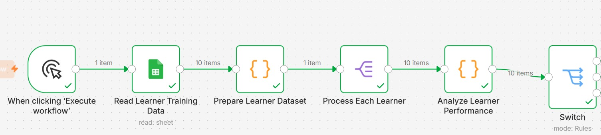
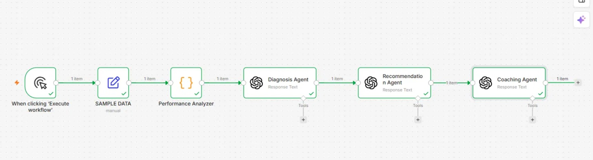

SkillWeave Dynamics
AI-Powered Learner Analytics & Development Recommendation Engine
Project Overview
SkillWeave Dynamics is an AI-powered learner analytics workflow designed to automate learner performance analysis, identify development opportunities, and generate personalized recommendations at scale.
Built using n8n, OpenAI, and Google Sheets, the solution demonstrates how workflow automation and generative AI can support Learning & Development teams in delivering data-driven coaching and development interventions.
Business Challenge
Learning teams often struggle to analyze learner performance data manually across large populations. The process is time-consuming, inconsistent, and difficult to scale when personalized coaching recommendations are required.
Solution Architecture
The workflow automates learner data processing, performance evaluation, categorization, and recommendation generation using AI-powered analysis.
Learner Analytics Workflow

The learner analytics engine evaluates individual learner performance, identifies development needs, and produces targeted recommendations to support growth and performance improvement.
Workflow Process
- Read learner training and assessment data
- Prepare and structure learner datasets
- Process learner records individually
- Analyze learner performance using AI
- Categorize learners by performance level
- Generate personalized development recommendations
- Prepare outputs for stakeholder review and action planning
Business Impact
- Reduces manual learner analysis effort
- Improves consistency of learner evaluations
- Scales personalized coaching recommendations
- Enables data-driven learning interventions
- Accelerates development planning and decision-making
- Demonstrates practical use of Generative AI in Learning & Development
Technology Stack
- n8n Workflow Automation
- OpenAI
- Google Sheets
- Learning Analytics
- Prompt Engineering
- Workflow Design
- Generative AI
- Business Process Automation
Skills Demonstrated
- Learning Analytics
- AI Integration for L&D
- Workflow Automation Design
- Prompt Engineering
- Business Process Mapping
- Data Analysis
- Solution Architecture
- Automation Strategy
- Technical Documentation
- Learning Technology Implementation
Created by Shobha Singh
Last Updated: July 2026